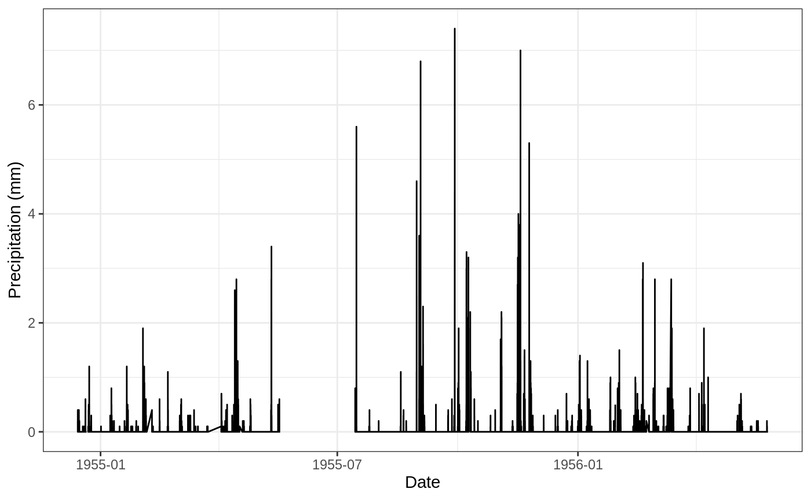

An introduction to hyetor
Konstantinos Vantas
2019-08-31
Source:vignettes/intro_hyetor.Rmd
intro_hyetor.Rmd
What does hyetor
hyetor provides functionality to analyze fixed interval precipitation records. The functions that are provided are the family of functions: hyet_create(), hyet_fill, hyet_aggregate, etc., to easily preprocess and analyze precipitation time-series. All these functions return their results as tibbles and make use of magrittr’s pipe operator %>% to improve the readability and maintainability of code.
Internal data-sets
This time series comes from the weather station ‘Arna’ in Greece with coordinates 36.88002, 22.41292 (ETRS89) and altitude 779 m. The owner of that weather station is the Ministry of Environment and Energy. Precipitation’s units of measurement is in mm and the time step is five minutes.
Example
This is a minimal example which shows how to use the package’s functions to analyze the internal data set.
Load libraries and view the first rows of the internal precipitation time-series:
library(hyetor)
library(tibble)
library(dplyr)
library(lubridate)
library(ggplot2)
prec5min
#> # A tibble: 48,209 x 2
#> date prec
#> <dttm> <dbl>
#> 1 1954-12-14 07:40:00 0
#> 2 1954-12-14 07:45:00 0
#> 3 1954-12-14 07:50:00 0
#> 4 1954-12-14 07:55:00 0
#> 5 1954-12-14 08:00:00 0
#> 6 1954-12-14 08:05:00 0
#> 7 1954-12-14 08:10:00 0
#> 8 1954-12-14 08:15:00 0
#> 9 1954-12-14 08:20:00 0
#> 10 1954-12-14 08:25:00 0
#> # … with 48,199 more rowsLet’s create a plot:
prec5min %>%
ggplot(aes(x = date, y = prec)) +
geom_line() +
ylab("Precipitation (mm)") +
xlab("Date") +
theme_bw()
Preprocessing
The hyet_fill function is used to fill missing date values with NA values. This function can be used when missing values in time series are marked implicitly using missing dates.
Let’s use the hyet_fill function and plot again the data
prec_filled <- prec5min %>%
hyet_fill(time_step = 5, ts_unit = "mins")
prec_filled %>%
ggplot(aes(x = date, y = prec)) +
geom_line() +
ylab("Precipitation (mm)") +
xlab("Date") +
theme_bw()
Analysis
Split to independent rainstorms and calculate erosivity values with cumulative precipitation greater than 12,7 mm:
prec5min %>%
hyet_split(time_step = 5, ts_unit = "mins") %>%
hyet_erosivity(time_step = 5) %>%
ungroup() %>%
filter(cum_prec > 12.7) %>%
select(begin, duration, cum_prec, erosivity)
#> # A tibble: 31 x 4
#> begin duration cum_prec erosivity
#> <dttm> <drtn> <dbl> <dbl>
#> 1 1955-03-03 10:10:00 805 mins 13.4 8.61
#> 2 1955-04-14 14:10:00 625 mins 38.7 154.
#> 3 1955-04-15 11:20:00 1225 mins 24.1 35.0
#> 4 1955-05-11 13:30:00 375 mins 28 138.
#> 5 1955-07-15 14:50:00 125 mins 19.6 175.
#> 6 1955-08-30 14:30:00 150 mins 23.9 131.
#> 7 1955-09-02 12:05:00 355 mins 25.3 136.
#> 8 1955-09-04 13:10:00 170 mins 20.4 61.7
#> 9 1955-09-28 18:05:00 100 mins 35.7 393.
#> 10 1955-10-01 11:40:00 520 mins 19.7 39.7
#> # … with 21 more rows